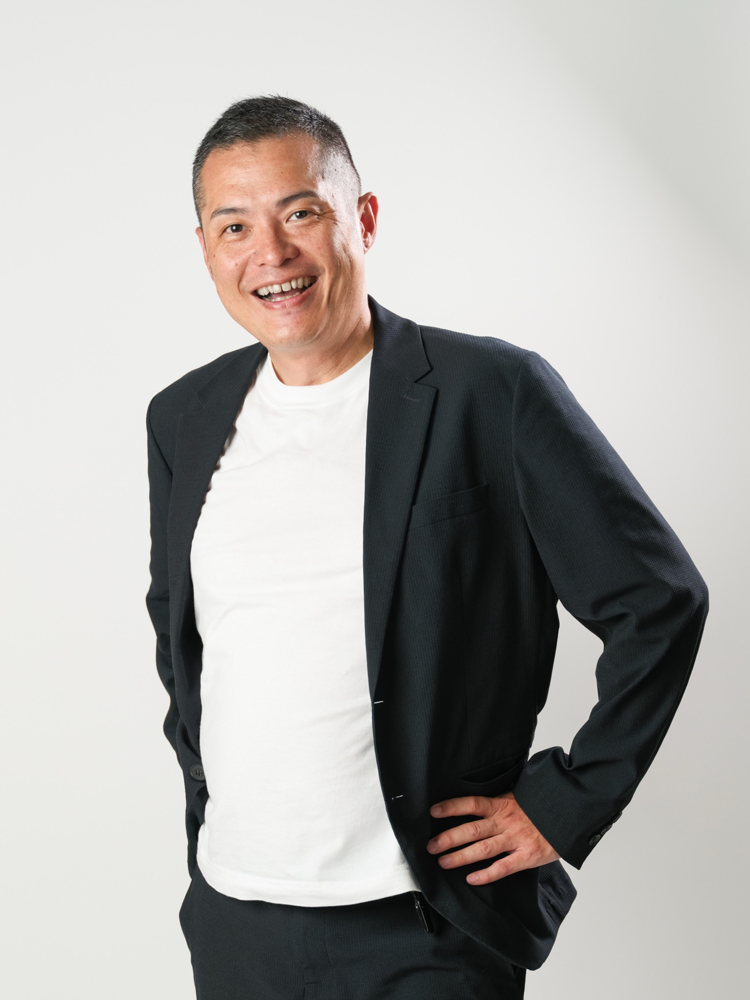

「数字に現れない部分」にこそ、
これからの税理士の価値がある。
40代で業界に入り、独立した税理士です。
だからこそ、挑戦する人の背中を押したい。

森下 知幸
MORISHITA TOMOYUKI ／ 所長・税理士・社会保険労務士
大阪市淀川区西中島で、税理士・社会保険労務士として中小企業と個人事業主の経営を支えています。 法人の税務顧問を中心に、近年は資産税（相続・事業承継）の分野に力を入れています。
税理士を目指し始めたのは33歳のとき。8年かけて資格を取り、業界に入ったのは40歳を過ぎてからでした。 決して早いスタートではありません。それでも――いえ、だからこそ、 同じように一歩を踏み出そうとしている方の力になりたいと考えています。
「企業はどうやって続いているのか」という疑問からTHE BEGINNING
新卒で入った会社で営業をしていた頃、取引先の財務諸表やお金の流れを、自分がまったく把握できていないことに気づきました。 目の前の会社が、なぜ続いているのか。何で利益を出しているのか。 「企業はどうやって継続しているのか」という素朴な疑問が消えず、それを解き明かしたいという好奇心が芽生えました。
はじめに志したのは国税専門官でしたが、こちらは叶わず、社会保険庁に入庁します。 年金や社会保険という、「人」を支える制度の裏側に長く携わりました。 この時期の経験は、いま社会保険労務士としての業務や、経営者の方の労務のご相談に直接つながっています。
それでも「企業の仕組みを理解したい」という思いは消えませんでした。 33歳から勉強を始め、働きながら8年をかけて税理士資格を取得しました。
「やらなかった後悔より、やった後悔」を選んでINDEPENDENCE
税理士業界に入ったのは40歳を過ぎてから。そこから約7年、実務を積んで独立しました。 年齢的に慎重にならなかったといえば嘘になります。それでも、 「やらなかった後悔より、やった後悔を選ぼう」と決めました。
業界に入ってから力を注いだのは、業務の幅を広げることです。 はじめは一般的な法人税務を中心に担当していましたが、自分の強みを広げたいと考え、 資産税を専門とする事務所の実務にも携わりながら、事業承継や相続税といった分野へ範囲を広げてきました。 法人顧問を継続しながら、いまも学び続けています。
AIの時代に、税理士に残る仕事OUR VALUE
数字に現れない部分こそが、これからの税理士の真の価値になる。
AIの進化によって、税務計算の多くはこの先どんどん自動化されていくはずです。 そのときに残るのは、数字以外の部分だと考えています。
資産税の仕事では、経営者の思いやご家族の感情と向き合う場面が多くあります。 事業承継であれば、先代の思いをどう次に伝えるか。相続であれば、ご家族の気持ちにどう寄り添うか。 そこに時間を使えるかどうかが、これからの事務所の差になると考えています。
だからこそ、業務の効率化には積極的です。クラウド会計やAIツールを活用して手を動かす時間を減らし、 浮いた時間をお客様との対話に使う。それが当事務所の方針です。
創業から相続まで、生涯のパートナーとしてVISION
目指しているのは、事業の「始まりから終わりまで」に一貫して寄り添える事務所です。 創業期の経営サポートから、成長期の税務顧問、そして事業承継・相続という出口まで。 場面ごとに相談先が変わるのではなく、同じ人間がずっと隣にいる。そういう関係を作りたいと考えています。
とくに支援したいのは、事業にチャレンジしている若手の経営者の方です。 私自身がチャレンジの最中にいるからこそ、その難しさも、面白さも分かるつもりです。 司法書士の先生方とも連携し、勉強会などを通じて、挑戦する人が集まるコミュニティを作っていきたいと考えています。
経歴CAREER
| 時期 | 内容 |
|---|---|
| 1977年 | 誕生 |
| 新卒 | 一般企業に入社し、営業職に従事。取引先の財務に関心を持つ |
| ― | 社会保険庁に入庁。年金・社会保険の分野に携わる |
| 33歳 | 税理士を目指して勉強を開始 |
| 8年後 | 税理士資格を取得 |
| 40歳代 | 税理士業界へ。法人税務を中心に実務経験を積む |
| ― | 資産税専門の実務にも携わり、事業承継・相続へ専門分野を拡大 |
| 約7年後 | 独立し、森下知幸税理士・社労士事務所を開設（大阪市淀川区西中島） |
| 独立後 | 社会保険労務士として登録。税務と労務をひとつの窓口でお引き受けできる体制を整える |
資格・専門分野QUALIFICATION
保有資格
税理士／社会保険労務士
得意分野
法人税務顧問、相続税申告、事業承継・自社株対策、法人設立支援、社会保険・労務手続き
大切にしていること
感謝・尊敬・愛。数字の背景にある想いを聞くこと。言いにくいことも誠意をもって伝えること
当事務所の経営理念「感謝・尊敬・愛」は、 こうした経歴の中で私自身がたどり着いた、判断に迷ったときに立ち返るための基準です。 詳しくは経営理念のページをご覧ください。
ご相談をお考えの方へMESSAGE
多くの経営者の方は、日々「数字」と向き合う時間が多いと思います。 けれども、その数字の裏には必ず、判断があり、迷いがあり、想いがあります。 私は、そこを聞かせていただくことから始めたいと考えています。
「一歩踏み出したい」「今の状態を変えたい」。 そう思っておられる方は、まだ何も決まっていない段階で構いませんので、一度お話を聞かせてください。 初回のご相談は無料です。契約を急かすことはいたしません。
まずは、お話を聞かせてください。
ご相談内容が固まっていなくても構いません。
初回相談は無料です
無料相談のお問い合わせ